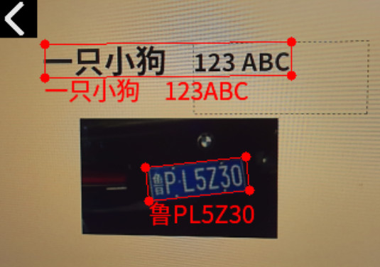

中文
中文MaixCAM MaixPy 实现 OCR 图片文字识别
OCR 简介
OCR（Optical Character Recognition，光学字符识别）即用视觉的方式识别图像中的文字。
在很多场景会用到，比如：
- 识别文字/数字卡片
- 提取卡片上的文字，比如身份证
- 电子化纸质文档
- 数显数字读取，可用于抄表、旧仪器数据电子化等
- 车牌文字识别
MaixPy 中使用 OCR
MaixPy 移植了 PaddleOCR, 是由百度开源的一款 OCR 算法，想了解原理可以看这个开源项目。

首先保证 MaixPy 版本 >= 4.6。
然后执行代码：(完整的最新的代码在MaixPy 仓库，以源码为准)
from maix import camera, display, image, nn, app
model = "/root/models/pp_ocr.mud"
ocr = nn.PP_OCR(model)
cam = camera.Camera(ocr.input_width(), ocr.input_height(), ocr.input_format())
disp = display.Display()
image.load_font("ppocr", "/maixapp/share/font/ppocr_keys_v1.ttf", size = 20)
image.set_default_font("ppocr")
while not app.need_exit():
img = cam.read()
objs = ocr.detect(img)
for obj in objs:
points = obj.box.to_list()
img.draw_keypoints(points, image.COLOR_RED, 4, -1, 1)
img.draw_string(obj.box.x4, obj.box.y4, obj.char_str(), image.COLOR_RED)
disp.show(img)
可以看到用了ocr = nn.PP_OCR(model) 加载模型，然后用ocr.detect(img) 检测并且识别文字得到结果画在了屏幕上。
更多模型选择
到MaixHub 模型下载 可以下载到更完整的模型，不同输入分辨率，不同语言，不同的版本（MaixPy 目前默认pp_ocr.mud 模型为 PPOCRv3 检测+v4识别）。
只识别不检测
如果你已经有处理好了的文字图，即一张图中已知文字的四个角坐标，可以不调用detect函数，二是只调用recognize函数，这样就不会检测而是仅仅识别图片中的文字。
自定义模型
默认模型提供了中文和英文文字检测识别模型，如果你有特殊的需求，比如其它语言，或者只想检测特定的图形不想检测所有类型的文字，
可以到PaddleOCR 官方模型库 下载对应的模型然后转换成 MaixCAM 支持的模型格式即可。
这里最复杂的就是将模型转换成 MaixCAM 可用的模型，过程比较复杂，需要有基本的 Linux 使用基础以及灵活变通的能力。
- 首先自己使用 PaddleOCR 源码进行训练模型或者下载官方提供的模型，检测模型请选择 PP-OCRv3， 因为效果不错的同时速度比 v4 快，识别模型请下载 v4 模型，实测 v3 在 MaixCAM 上量化后效果不理想。
- 然后将模型转成 onnx:
model_path=./models/ch_PP-OCRv3_rec_infer
paddle2onnx --model_dir ${model_path} --model_filename inference.pdmodel --params_filename inference.pdiparams --save_file ${model_path}/inference.onnx --opset_version 14 --enable_onnx_checker True
- 然后按照onnx转MUD格式的模型文档 安装好环境再转换模型，这里在附录提供示例转换脚本。
- 使用 MaixPy 加载运行即可。
附录：模型转换脚本
检测：
#!/bin/bash
set -e
net_name=ch_PP_OCRv3_det
input_w=320
input_h=224
output_name=sigmoid_0.tmp_0
# scale 1/255.0
# "mean": [0.485, 0.456, 0.406],
# "std": [0.229, 0.224, 0.225],
# mean: mean * 255
# scale: 1/(std*255)
# mean: 123.675, 116.28, 103.53
# scale: 0.01712475, 0.017507, 0.01742919
mkdir -p workspace
cd workspace
# convert to mlir
model_transform.py \
--model_name ${net_name} \
--model_def ../${net_name}.onnx \
--input_shapes [[1,3,${input_h},${input_w}]] \
--mean "123.675,116.28,103.53" \
--scale "0.01712475,0.017507,0.01742919" \
--keep_aspect_ratio \
--pixel_format bgr \
--channel_format nchw \
--output_names "${output_name}" \
--test_input ../test_images/test3.jpg \
--test_result ${net_name}_top_outputs.npz \
--tolerance 0.99,0.99 \
--mlir ${net_name}.mlir
# export bf16 model
# not use --quant_input, use float32 for easy coding
model_deploy.py \
--mlir ${net_name}.mlir \
--quantize BF16 \
--processor cv181x \
--test_input ${net_name}_in_f32.npz \
--test_reference ${net_name}_top_outputs.npz \
--model ${net_name}_bf16.cvimodel
echo "calibrate for int8 model"
# export int8 model
run_calibration.py ${net_name}.mlir \
--dataset ../images \
--input_num 200 \
-o ${net_name}_cali_table
echo "convert to int8 model"
# export int8 model
# add --quant_input, use int8 for faster processing in maix.nn.NN.forward_image
model_deploy.py \
--mlir ${net_name}.mlir \
--quantize INT8 \
--quant_input \
--calibration_table ${net_name}_cali_table \
--processor cv181x \
--test_input ${net_name}_in_f32.npz \
--test_reference ${net_name}_top_outputs.npz \
--tolerance 0.9,0.5 \
--model ${net_name}_int8.cvimodel
识别:
#!/bin/bash
set -e
# net_name=ch_PP_OCRv4_rec
# output_name=softmax_11.tmp_0
net_name=ch_PP_OCRv3_rec_infer_sophgo
output_name=softmax_5.tmp_0
input_w=320
input_h=48
cali_images=../images_crop_320
# scale 1/255.0
# "mean": [0.5, 0.5, 0.5],
# "std": [0.5, 0.5, 0.5],
# mean: mean * 255
# scale: 1/(std*255)
# mean: 127.5,127.5,127.5
# scale: 0.00784313725490196,0.00784313725490196,0.00784313725490196
mkdir -p workspace
cd workspace
# convert to mlir
model_transform.py \
--model_name ${net_name} \
--model_def ../${net_name}.onnx \
--input_shapes [[1,3,${input_h},${input_w}]] \
--mean "127.5,127.5,127.5" \
--scale "0.00784313725490196,0.00784313725490196,0.00784313725490196" \
--keep_aspect_ratio \
--pixel_format bgr \
--channel_format nchw \
--output_names "${output_name}" \
--test_input ../test_images/test3.jpg \
--test_result ${net_name}_top_outputs.npz \
--tolerance 0.99,0.99 \
--mlir ${net_name}.mlir
# export bf16 model
# not use --quant_input, use float32 for easy coding
model_deploy.py \
--mlir ${net_name}.mlir \
--quantize BF16 \
--processor cv181x \
--test_input ${net_name}_in_f32.npz \
--test_reference ${net_name}_top_outputs.npz \
--model ${net_name}_bf16.cvimodel
echo "calibrate for int8 model"
# export int8 model
run_calibration.py ${net_name}.mlir \
--dataset $cali_images \
--input_num 200 \
-o ${net_name}_cali_table
echo "convert to int8 model"
# export int8 model
# add --quant_input, use int8 for faster processing in maix.nn.NN.forward_image
model_deploy.py \
--mlir ${net_name}.mlir \
--quantize INT8 \
--quant_input \
--calibration_table ${net_name}_cali_table \
--processor cv181x \
--test_input ${net_name}_in_f32.npz \
--test_reference ${net_name}_top_outputs.npz \
--tolerance 0.9,0.5 \
--model ${net_name}_int8.cvimodel